X3001–X3118¶
Central Line Intersections, Stevanović Points & T/G Mappings
X3001–X3118 (Central Line Intersections, Stevanović Points & T/G Mappings) — 16 representative centers (from 118 in collection) constructed on acute reference triangle \((a, b, c) = (5, 6, 7)\) with unit baseline AB = \(1\).¶
Group Preamble — Antipodal Pairs on Circles
In response to Stevanovic’s findings (X3000 to X3006), Peter Moses noted (Hyacinthos, 12/9/2004) a method for mapping a pair of antipodal points on one circle to an antipodal pair on another circle. The method depends on centers of similitude:
Suppose O1 and O2 are circles, that P is on O1 and that P' is the antipode of P on O1. Let U be the internal center of similitude (insimilicenter) of O1 and O2, and V the exsimilicenter. Define Q = PU ∩P' V and Q' = PV ∩P' U. Then on O2, point Q' is the antipode of Q. Moreover, the lines PP' and QQ' are parallel.
The method follows from introductory material on centers of similitude (e.g., H. S. M. Coxeter, Introduction to Geometry, 2nd edition, page 70, which cites Nathan Altshiller-Court, College Geometry, 2nd edition, page 184). If you have The Geometer’s Sketchpad, you can view Antipodal Pairs (AntipodalPairs.gsp).
In the following examples, suppose P =\(p : q : r\) (trilinears).
Example 1. O1 = circumcircle and O2 = incircle. In this case, insimilicenter(O1, O2) = X55, and exsimilicenter(O1, O2) = X56. The antipodal points on O2 given by the Moses mapping are
Q = ((b - c)2p + a(bq + cr))(b + c - a) : :
Q' = ((b + c)2p + a(bq + cr))/(b + c - a) : : .
Example 2. O1 = circumcircle and O2 = Apollonius circle, with center X970. Here, insimilicenter(O1, O2) = X573, and exsimilicenter(O1, O2) = X386. A point on O2 is
Q' = (a + b)(a + c)(b + c)2p - a(bc + ca + ab + \(b^{2}\) + \(c^{2})\)(bq + cr) : : .
Example 3. O1 = circumcircle and O2 = Spieker circle. In this case, insimilicenter(O1, O2) = X958, and exsimilicenter(O1, O2) = X1376.
Q = (a - b - c)[((b + c)(b - c)2 + \(a(b^{2}\) + \(c^{2})\))p + (ab + ac + 2bc + \(a^{2})\)(bq + cr)] : :
Q' = (\(b^{3}\) + \(c^{3}\) - \(ab^{2}\) - \(ac^{2}\) - \(bc^{2}\) - \(b^{2}\)c)p + (ab + ac - 2bc - \(a^{2})\)(bq + cr) : :
Example 4. O1 = incircle and O2 = Spieker circle. In this case, insimilicenter(O1, O2) = X2, and exsimilicenter(O1, O2) = X8.
Q = (bp + cq)/a : (cr + ap)/b : (ap + bq)/c = complement of P
Q' = 2abc(b + c)p - bc(a - b - c)(bq + cr) : :
Example 5. O1 = circumcircle and O2 = sine-triple-angle circle. In this case, insimilicenter(O1, O2) = X1147, and exsimilicenter(O1, O2) = X184. A point on O2 is
Q = a[\(a(a^{2}\) - \(b^{2})\)(\(a^{2}\) - \(c^{2})\)p - \(a^{2}(b^{2} -a^{2} + c^{2})\)(bq + cr)] : :
Group Preamble — T and G Mappings (Centers X3112-X3118)
This section presents points X3112 to X3118 as representative of points introduced by Quang Tuan Bui in Hyacinthos, August 5, 2006.
Suppose X is a point not on a sideline of ABC. Let
Then the points A, B, C, gX, tX, Tg, Gt are on a conic. As a circumconic, it is the image under the isogonal conjugate mapping of line X(gtX). It is also the image under the isotomic conjugate mapping of line X(tgX).
If X =\(x : y : z\) (trilinears), then
Gt = (\(b^{2}\) - \(c^{2})\)/(\(x(b^{2}\)\(y^{2}\) - \(c^{2}\)\(z^{2})\)) : (\(c^{2}\) - \(a^{2})\)/(\(y(c^{2}\)\(z^{2}\) - \(a^{2}\)\(x^{2})\)) : (\(a^{2}\) - \(b^{2})\)/(\(z(a^{2}\)\(x^{2}\) - \(b^{2}\)\(y^{2})\))
Tg = (\(b^{2}\) - \(c^{2})\)/(\(x(y^{2}\) - \(z^{2})\)) : (\(c^{2}\) - \(a^{2})\)/(\(y(z^{2}\) - \(x^{2})\)) : (\(a^{2}\) - \(b^{2})\)/(\(z(x^{2}\) - \(y^{2})\))
X3001(BROCARD AXIS)∩(DE LONGCHAMPS LINE)
X3002(BROCARD AXIS)∩(GERGONNE LINE)
X3003(BROCARD AXIS)∩(ORTHIC AXIS)
X3004(DE LONGCHAMPS LINE)∩(GERGONNE LINE)
X3005(DE LONGCHAMPS LINE)∩(LEMOINE AXIS)
X3006(DE LONGCHAMPS LINE)∩(NAGEL LINE)
X3007(DE LONGCHAMPS LINE)∩(SODDY LINE)
X3008(GERGONNE LINE)∩(NAGEL LINE)
X3009(LEMOINE AXIS)∩(NAGEL LINE)
X3011(NAGEL LINE)∩(ORTHIC AXIS)
X3013(ANTIORTHIC AXIS)∩(FERMAT AXIS)
X3014(DE LONGCHAMPS LINE)∩(FERMAT AXIS)

X3016(LEMOINE AXIS)∩(FERMAT AXIS)
X3017(NAGEL LINE)∩(FERMAT AXIS)
X3018(ORTHIC AXIS)∩(FERMAT AXIS)
X30204th STEVANOVIC POINT
X30215th STEVANOVIC POINT
X30226th STEVANOVIC POINT
X30237th STEVANOVIC POINT
X30248th STEVANOVIC POINT
X30259th STEVANOVIC POINT
X302610th STEVANOVIC POINT
X3026 lies on the incircle.
X3027INCIRCLE-ANTIPODE OF X3023
X3028INCIRCLE-ANTIPODE OF X3024
X3029INTERSECTION X10X_115∩X98X_573
X3030INTERSECTION X10X_11∩X43X_57
X3031INTERSECTION X10X_125∩X74X_573
X3032INTERSECTION X10X_11∩X100X_386
X3033INTERSECTION X10X_116∩X43X_57
X3034INTERSECTION X10X_116∩X105X_386
X3035COMPLEMENT OF X11
X3036COMPLEMENT OF X1317
X3037COMPLEMENT OF X1356
X3038COMPLEMENT OF X1357
X3039COMPLEMENT OF X1358
X3040COMPLEMENT OF X1361
X3041COMPLEMENT OF X1362
X3042COMPLEMENT OF X1364
X3043INTERSECTION X4X_110∩X74X_184
X3044INTERSECTION X54X_114∩X99X_184
X3044 lies on the sine-triple-angle circle.
X3045INTERSECTION X54X_119∩X100X_184
X3045 lies on the sine-triple-angle circle.
X3046INTERSECTION X54X_118∩X101X_184
X3046 lies on the sine-triple-angle circle.
X3047INTERSECTION X54X_113∩X2X_98
X3048INTERSECTION X110X_126∩X111X_184
X3048 lies on the sine-triple-angle circle.